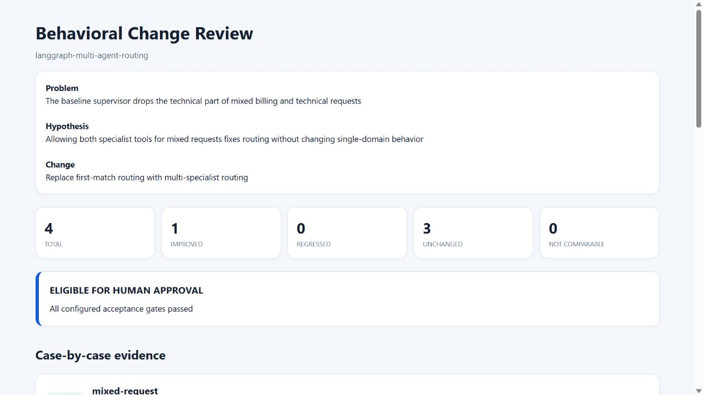
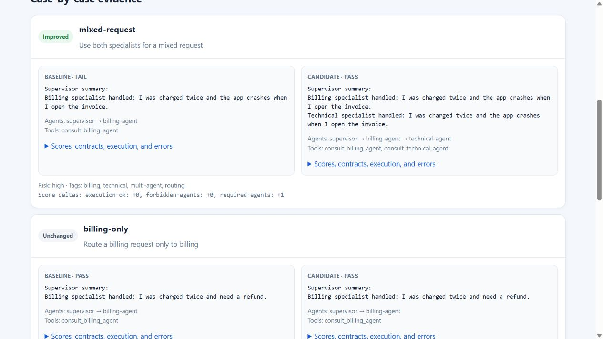
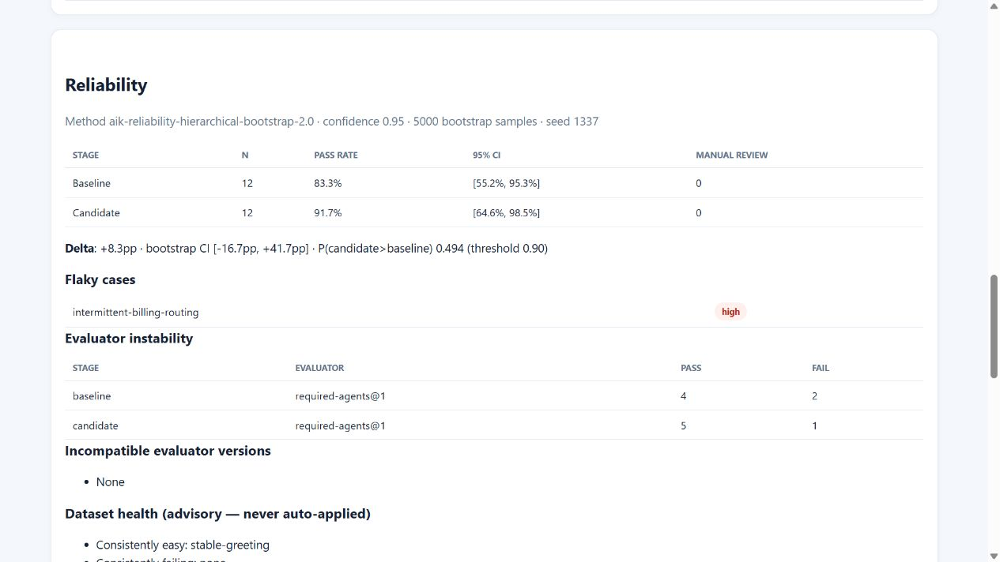

The problem
A small agent change can fix one case and quietly break another.
AIK keeps the dataset, evaluator configuration, baseline, candidate, acceptance rules, repeated trials and human decision together as portable files. It complements observability; it does not replace production monitoring or release ownership.
Ten-minute tutorial
One evidence chain, six explicit steps.
- 01Reproduce
Turn the failed behavior into stable, synthetic test cases.
- 02Govern
Define expectations, evaluators and acceptance gates before the candidate run.
- 03Compare
Run the same cases against baseline and candidate evidence.
- 04Review
Inspect every improvement, regression, evaluator error and missing result.
- 05Repeat
Use repeated trials to distinguish a stable gain from agent or judge noise.
- 06Promote
After human acceptance, preserve the fix as history and permanent regression data.
python scripts/build_showcase.py
python -m http.server 8000 --directory dist/showcase
# open http://127.0.0.1:8000What the reviewer sees
Human-readable evidence, backed by inspectable files.



Safety boundary
Evidence is not automatic production approval.
AIK can recommend eligible, manual_review or rejected. A statistical result cannot override deterministic rejection, and promotion still requires an explicit human decision.